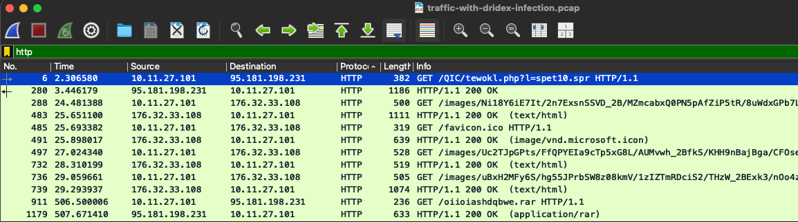
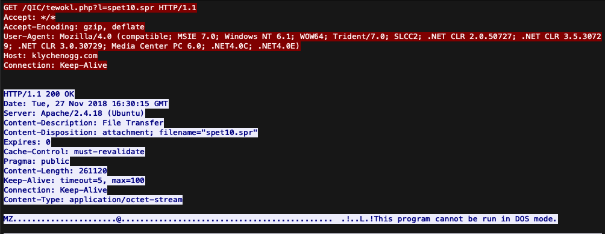
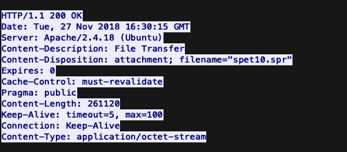
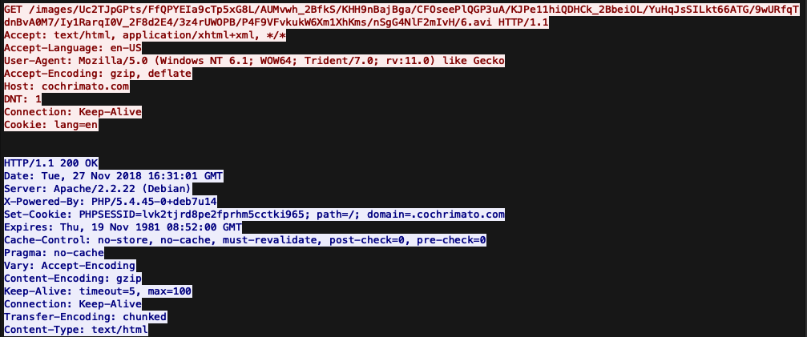
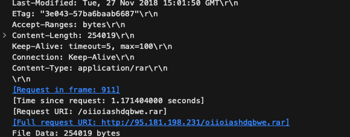
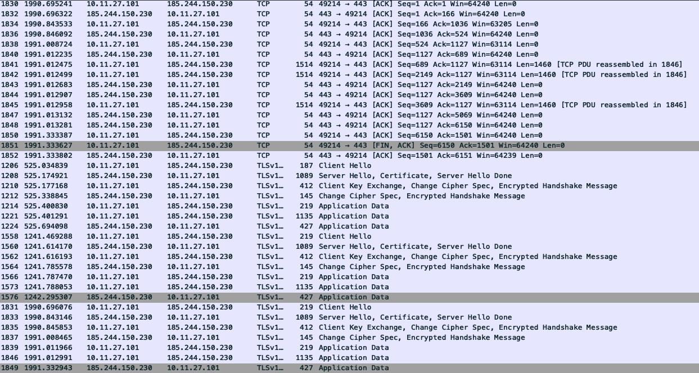
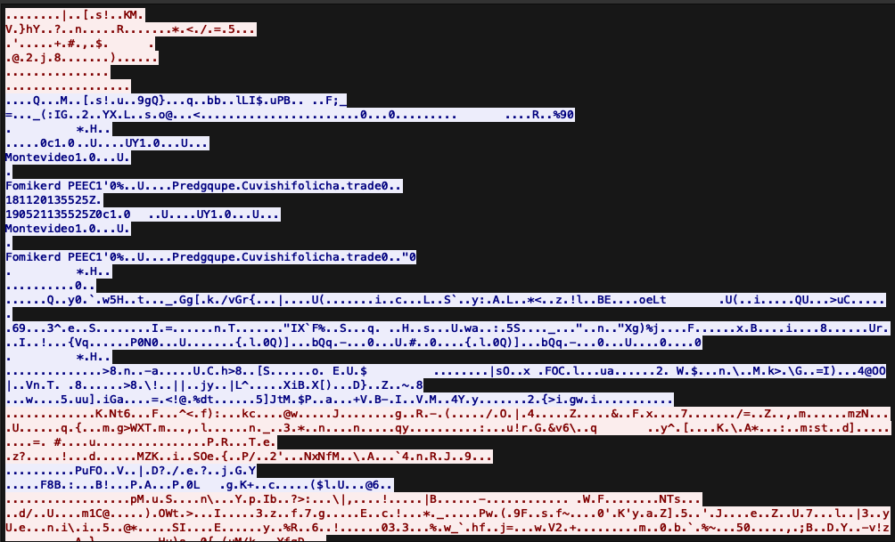

Análisis de laboratorio
Análisis de malware: Network Analysis
03 Jul 2026
Escenario
Un analista de SOC en Umbrella Corporation está pasando por alertas SIEM y ve la alerta de conexiones a un dominio malicioso conocido. El tráfico proviene de la computadora de Sara, un contador que recibe un gran volumen de correos electrónicos de los clientes diariamente. Mirando los registros de la puerta de enlace de correo electrónico para el buzón de Sara, no hay nada inmediatamente sospechoso, con correos electrónicos provenientes de los clientes. Sara es contactada a través de su teléfono y afirma que un cliente le envió una factura que tenía un documento con una macro, abrió el correo electrónico y el programa se bloqueó. El equipo de SOC recuperó un PCAP para su posterior análisis.
Preguntas
¿Cuál es la IP privada del host infectado?
Filtré el tráfico por HTTP y observé que el host interno 10.11.27.101 realizó una solicitud al dominio klychnegq.com, recibiendo una respuesta HTTP/1.1 200 OK. Al revisar el HTTP Stream, identifiqué la descarga del archivo spet10.spr desde la ruta /QIC/tewokl.php?l=spet10.spr.

El contenido del archivo inicia con la cabecera MZ y el mensaje This program cannot be run in DOS mode, lo que indica que se trata de un ejecutable PE de Windows, posiblemente relacionado con la actividad post-infección de Dridex.

¿Cuál es el binario de malware que el documento macro está tratando de recuperar?
En la pregunta anterior se identificó la descarga del archivo spet10.spr, por lo que este corresponde al binario de malware que el documento macro intenta recuperar.

¿De qué solicitudes HTTP de dominio provienen las solicitudes GET /images?
Al filtrar el tráfico HTTP se identificaron solicitudes GET hacia la ruta /images. Al revisar el TCP Stream de esas solicitudes, se observó que el campo Host corresponde al dominio cochrimato.com.

El equipo SOC encontró que Dridex, un malware de seguimiento de la infección por Ursnif, era el culpable. El cliente que le envió el archivo macro está comprometido. ¿Cuál es la URL completa que termina en .rar donde Ursnif recupera el malware de seguimiento?
Al revisar las solicitudes HTTP, se identificó la descarga del archivo oiioiashdqbwe.rar. En los detalles del paquete, el campo Full request URI muestra que la URL completa utilizada para recuperar el malware de seguimiento es http://95.181.198.231/oiioiashdqbwe.rar.

¿Qué son las direcciones IP de tráfico post-infección de Dridex que comienzan con 185?
La IP de tráfico post-infección de Dridex que comienza con 185 es 185.244.150.230. Esta dirección se identificó al filtrar el tráfico del host comprometido 10.11.27.101, observando conexiones TLS por el puerto 443 y tráfico cifrado posterior al handshake. Además, el certificado TLS asociado contiene campos sospechosos como Fomikerd PEEC y Predgqupe.Cuvishifolicha.trade.


Conclusión
Este análisis demuestra la importancia de tener cuidado al recibir correos con sentido de urgencia y no asumir que son legítimos. Es recomendable revisar los encabezados, remitentes, enlaces y archivos adjuntos antes de interactuar con ellos, ya que detrás de un simple clic o de la descarga de una supuesta factura puede existir código malicioso diseñado para comprometer el equipo.